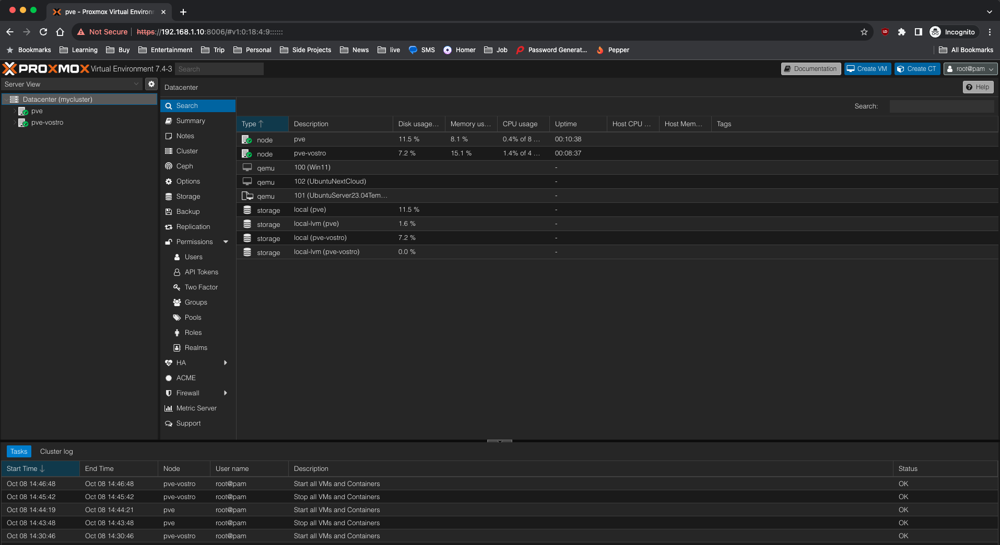
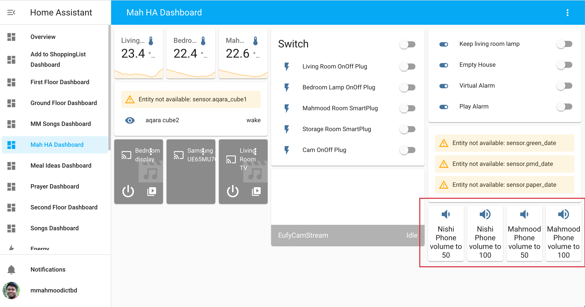
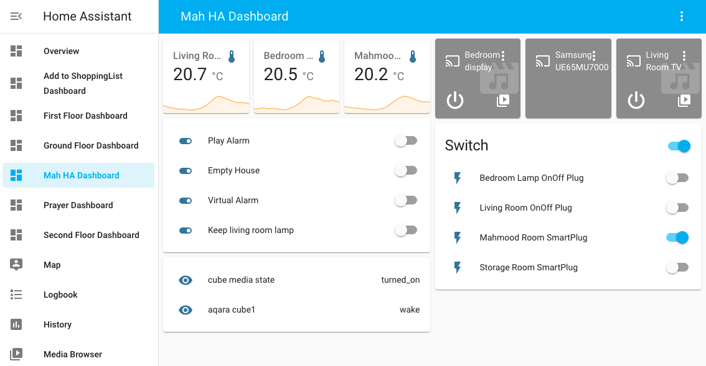
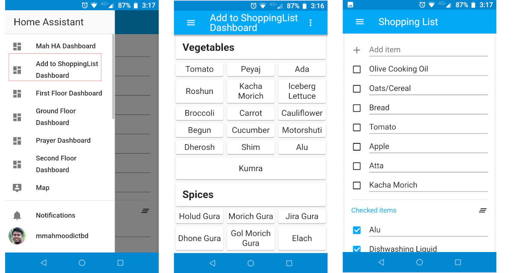
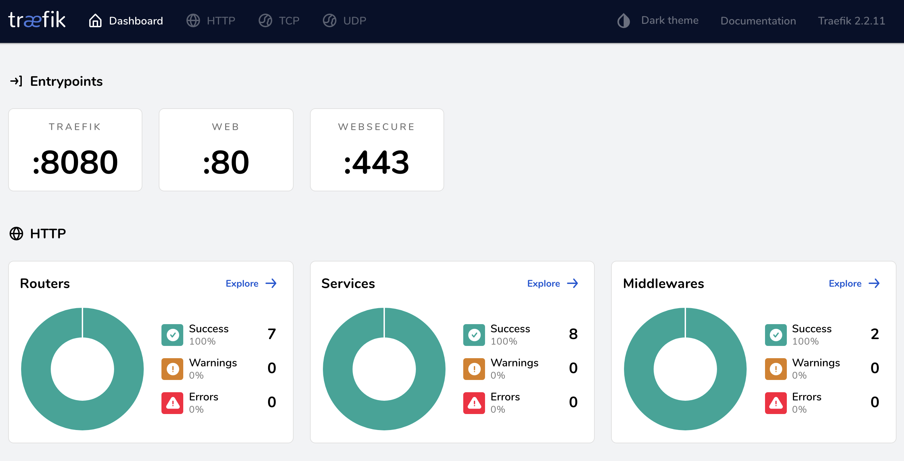
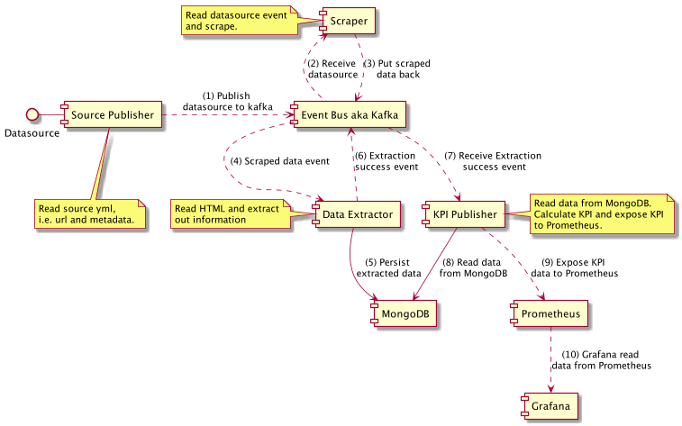

Proxmox Mirror RAID1
I've 2 16TB HDDs and I want to use them in Proxmox. I will create a mirror RAID1 zpool and create datasets for VMs, ISOs, photos, videos, and shared files.
14 posts in this archive.

I've 2 16TB HDDs and I want to use them in Proxmox. I will create a mirror RAID1 zpool and create datasets for VMs, ISOs, photos, videos, and shared files.
Electricity costs a lot, reduce Proxmox power consumption

Wife / husband / partner not picking up phone? Here is the HA way to control ring volume.

Door/window sensors triggers night alarm / home away alarm on my Google Home device. I wanted to do something that make my Android phone ring.

We all know HA has a shopping list integration, but it's a simple todo list, not well suited for managing groceries. Some people might suggest Grocy, but I didn't need that many functionalities.

I can access my HA from internet over HTTPS
As a software developer, we write code on a daily basis. Here are some tips how to find security vulnerabilities in source code.

Recently I worked on an assignment project where I tried to design an IoT data pipeline. Checkout the design and code.
What works and what doesn't when onboarding developers.
Working as an application security engineer can be very exciting and ridiculously boring at the same time. If your are to be an application security engineer, hope you get some ideas.
I needed to attach Java agent to my Java process to find security vulnerabilities. App is running in k8s and this is how I did it.
Running deCONZ application for ConBee II gateway on can be a challenge. Check out how I did it.

Recently I worked on an assignment project where I tried to implement an Event Driven Architecture. Checkout the code.
How I setup my homelab to learn security concepts.